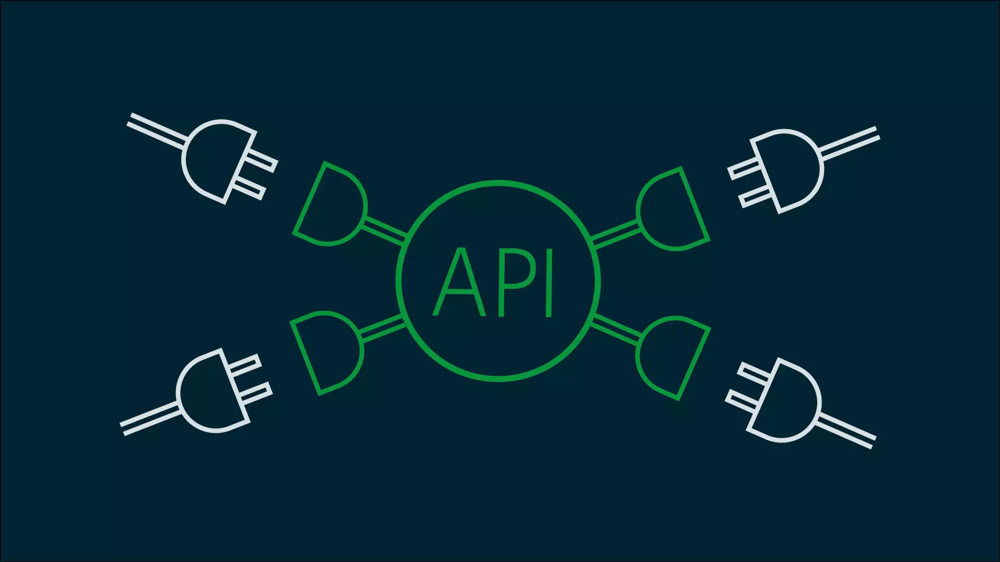

3. ¿Para Qué Sirven? El Poder de Conectar Mundos Digitales
>Ya sabemos qué son, pero ¿cuál es su verdadera utilidad? Las APIs son los "enchufes" del mundo digital. Permiten que aplicaciones y servicios, incluso si fueron creados por diferentes personas y con distintas tecnologías, puedan "conectarse" y trabajar juntos. Sus principales propósitos son:
- Reutilizar Funcionalidad: Evitan que los desarrolladores tengan que "reinventar la rueda". Si una aplicación ya hace algo muy bien (como mostrar mapas), otra aplicación puede usar esa función a través de su API.
- Facilitar la Integración: Permiten que sistemas distintos colaboren. Piensa en cómo una tienda online se conecta con un sistema de pagos (como PayPal o Stripe) o con una empresa de logística para los envíos.
- Compartir Datos de Forma Controlada: Hacen posible que una aplicación acceda a datos de otra, pero de una manera segura y definida por el dueño de los datos. Tú decides qué compartes y cómo (como cuando una app te pide permiso para acceder a tus contactos).
- Fomentar la Innovación: Al permitir que otros construyan sobre funcionalidades existentes, las APIs abren la puerta a la creación de nuevos servicios y aplicaciones que combinan lo mejor de varios mundos.
En resumen, las APIs son esenciales para construir los ecosistemas digitales complejos y conectados que usamos hoy en día, haciendo que todo funcione de manera más fluida y potente.